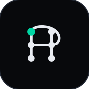
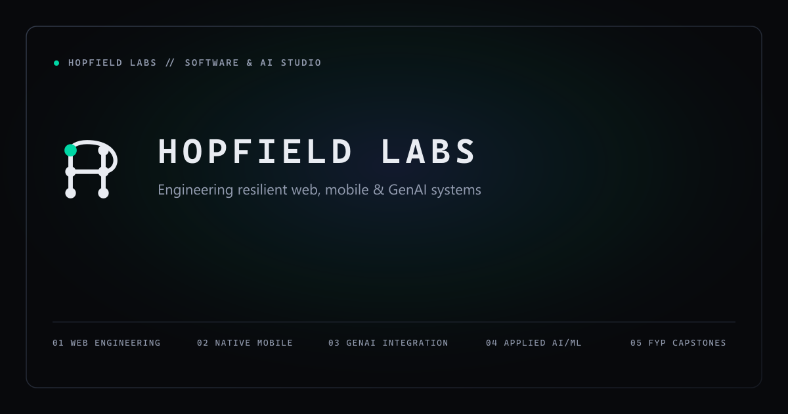

3 distinct conceptual directions hand-authored in pure geometric SVG (48×48 viewBox). Tested across scales (16px to 256px), pure black-on-white / white-on-black inversions, 2px distance blur, 1px wireframe outline integrity, 32×32 favicon simulation, and realistic navbar lockups.
The complete hand-authored vector brand system for Hopfield Labs: primary mark, single-path mono mark, horizontal lockup, stacked lockup, typography assets, 32×32 favicon, 180×180 Apple touch icon, and 1200×630 OG image.
Hand-authored pure SVG geometry. Inherits currentColor; calibrated optical centering at (23.88, 23.0).
Single continuous <path> element for sub-24px screens, monochrome printing, and vinyl reproduction.
Baseline-aligned mark and wordmark with zero external font dependencies. Perfect for navigation bars.
Symmetric centered layout for hero headers, badges, slide decks, and apparel.
Typed React component with responsive scaling and zero layout shifts.

apple-touch-icon (180px)
og-image (1200×630)Production multi-size ICO (16/32/48), safe-margin 180px Apple touch icon, and high-DPI OpenGraph preview.
Symmetric network chord geometry converging toward a single solid settled state node. Expresses Hopfield network energy convergence.
Nested energy landscape contour lines descending into an off-center attractor minimum with implied "H" negative space between boundary walls.
Engineered letter "H" built from graph vertices and edges, with an orbital recurrence feedback loop. Highly brandable, bold, and unambiguous.
stroke="currentColor" with minimal solid fill area. Inversion maintains identical visual mass between dark and light backgrounds.